This section summarizes missing-data patterns for the key FEC files in this project. For each dataset, the visuals include a bar chart of the most-missing columns, a sampled heatmap of missing vs. present values, and (where helpful) a row-level missingness distribution. Blank strings are normalized to NA before analysis. The helper functions keep plots compact by focusing on the columns with the most missingness.
Candidate summary files (candidate_summary_2020.csv, candidate_summary_2024.csv): one row per candidate per filing period with cash, receipts, disbursements, office sought, and address metadata.
Committee summary files (committee_summary_2020.csv, committee_summary_2024.csv): one row per committee per filing period with balances, receipts, disbursements, debts, and contact details.
Independent expenditure files (independent_expenditure_2020.csv, independent_expenditure_2024.csv): one row per outside-spend line item not coordinated with candidates; includes payee, purpose, amount, date, and election targeting.
Lobbyist bundle file (lobbyist_bundle.csv): bundled contributions reported by lobbyist or registrant PACs; shows contributor, recipient committee, amount, and coverage dates.
Disbursement file (disbursement_2021_24.csv): operating expenditures and other outflows reported by committees; records payee, purpose, amount, date, and memo flags.
plot_missing_cols(cand20, title ="Candidate 2020: columns with most missingness")
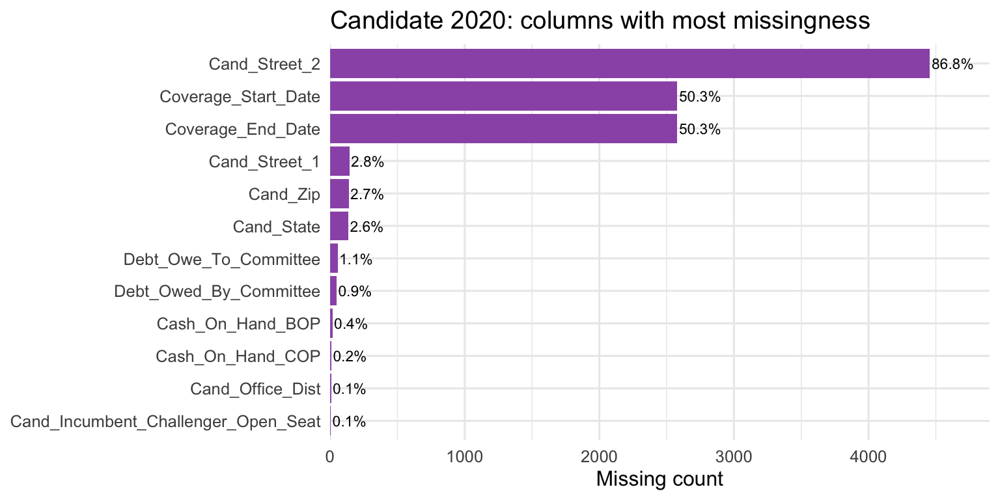
Code
plot_heatmap(cand20, title ="Candidate 2020: missing vs present (sampled rows, top columns)")
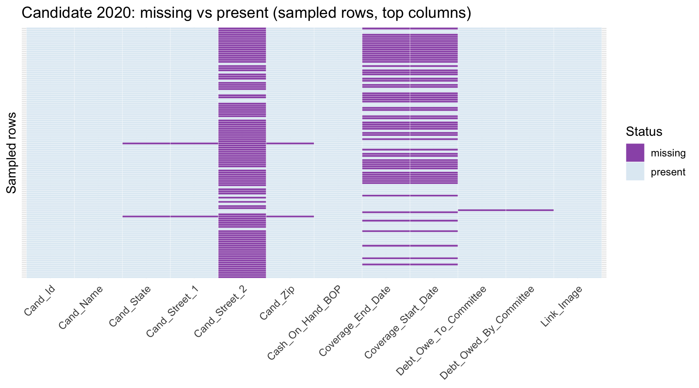
Interpretation: Money fields are essentially complete; the weak spots are the “when” and “where” details—coverage dates and second address lines. The analysis flags rows with fuzzy date windows on timelines, and maps keep the dollars while parking partial addresses in an “unknown” bin.
plot_missing_cols(cand24, title ="Candidate 2024: columns with most missingness")
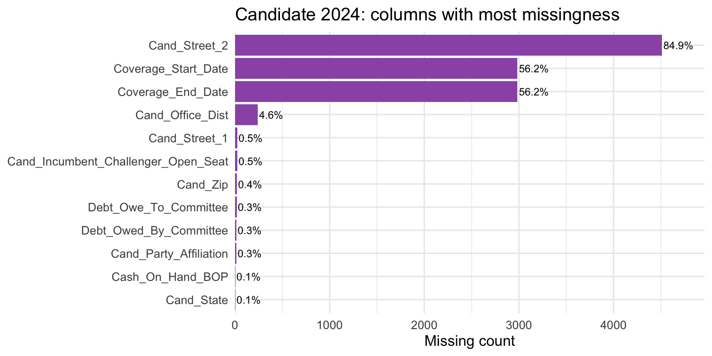
Code
plot_heatmap(cand24, title ="Candidate 2024: missing vs present (sampled rows, top columns)")
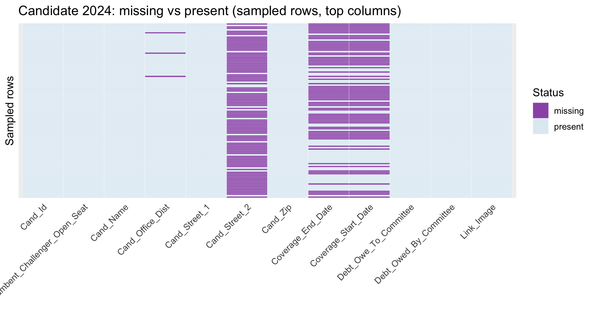
Interpretation: Same pattern in 2024: financials are present, but coverage dates and extra address lines are fuzzy. Trend charts highlight rows with missing windows, and location summaries retain the financial columns while labeling incomplete addresses as “unknown.”
plot_missing_cols(comm20, title ="Committee 2020: columns with most missingness")
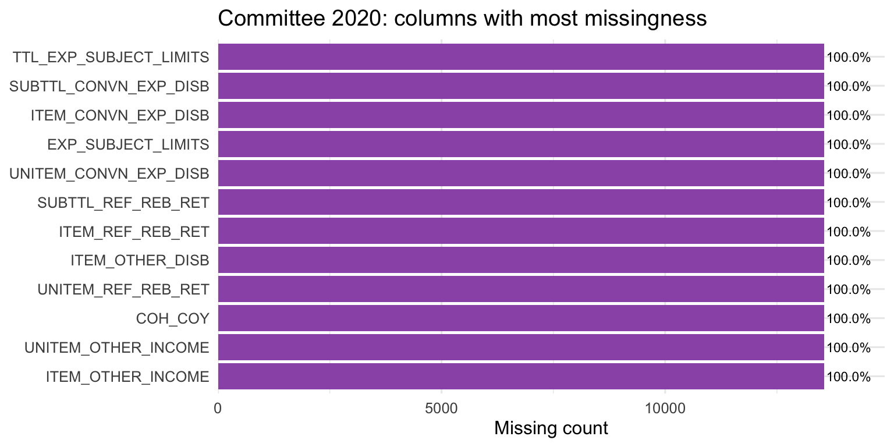
Code
plot_heatmap(comm20, title ="Committee 2020: missing vs present (sampled rows, top columns)")
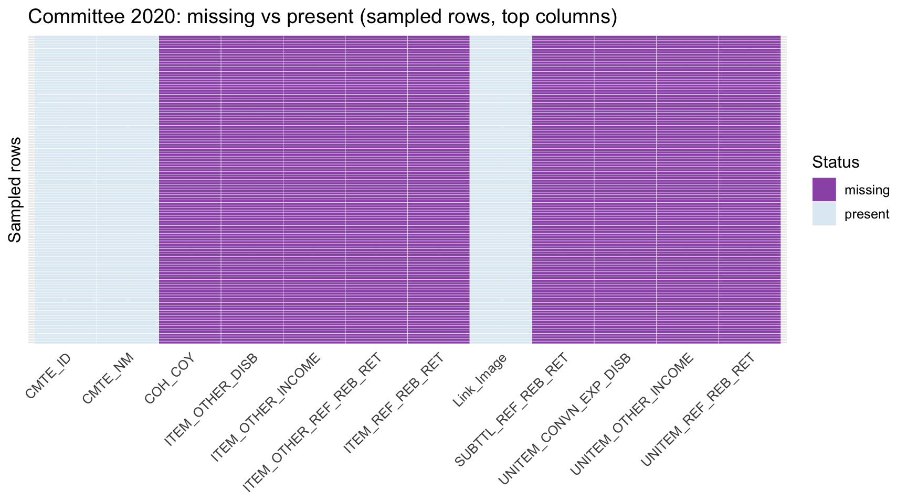
Interpretation: Committee money fields and IDs are intact, but coverage start/end dates and address fragments are patchy. Time-series views either filter or infer date windows; geographic views keep the dollars and flag rows with thin address info instead of dropping them.
plot_missing_cols(comm24, title ="Committee 2024: columns with most missingness")
Code
plot_heatmap(comm24, title ="Committee 2024: missing vs present (sampled rows, top columns)")
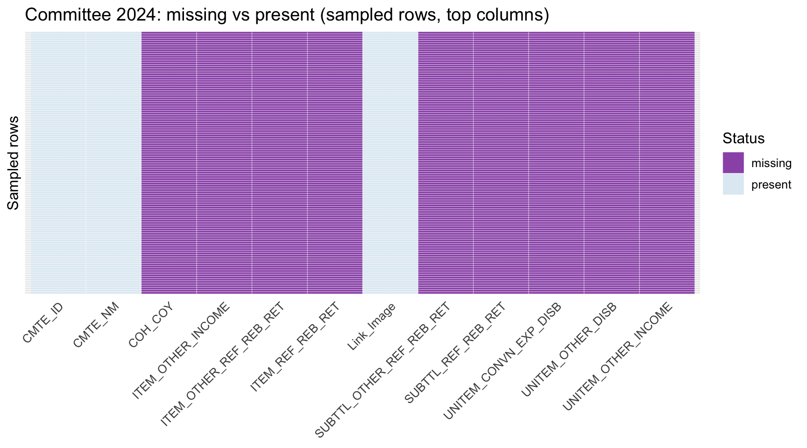
Interpretation: 2024 committees mirror 2020: financials and IDs are trustworthy; coverage dates and address bits are hit-or-miss. Dollars stay in place, with rows tagged for missing dates/addresses before plotting trends or maps.
plot_missing_cols(ie20, title ="Independent expenditure 2020: columns with most missingness")
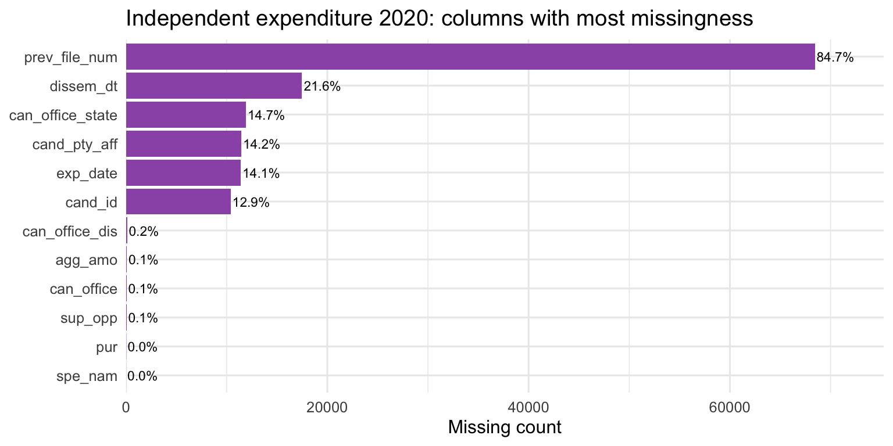
Code
plot_heatmap(ie20, title ="Independent expenditure 2020: missing vs present (sampled rows, top columns)")
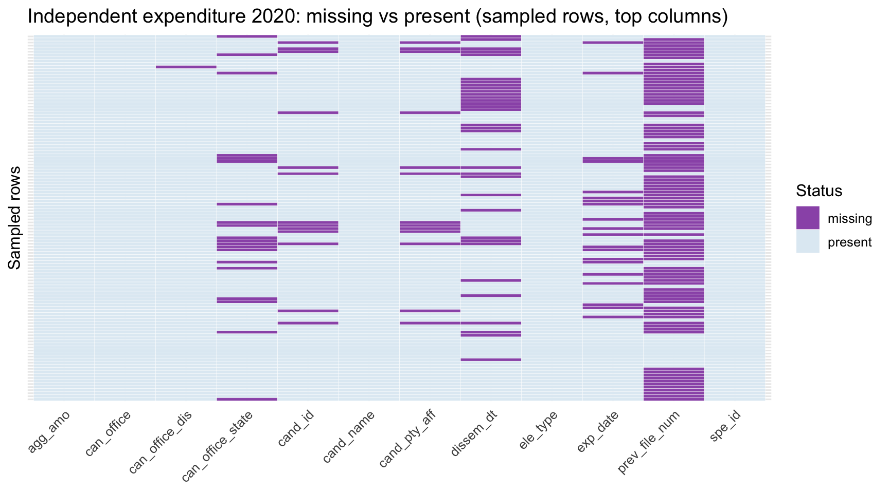
Interpretation: Spend amounts and dates look good; payee names/locations are the messy part. Rollups keep all dollars, and maps use an “unknown payee location” bucket instead of deleting rows.
plot_missing_cols(ie24, title ="Independent expenditure 2024: columns with most missingness")
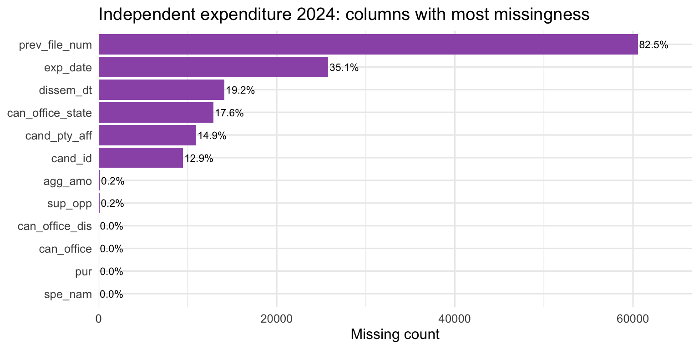
Code
plot_heatmap(ie24, title ="Independent expenditure 2024: missing vs present (sampled rows, top columns)")
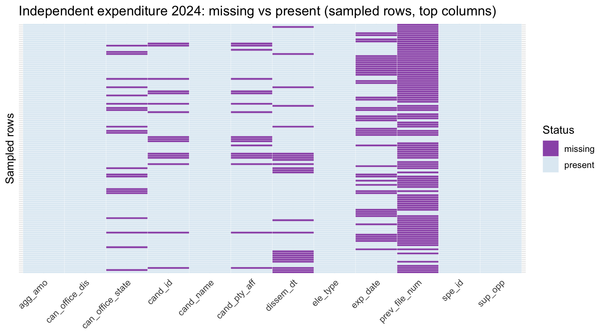
Interpretation: Dollars and dates hold up here too; payee and purpose descriptions are thin. Spend totals remain intact, missing descriptors are flagged, and categorical imputations are only considered if a model truly needs them.
plot_missing_cols(lobby, title ="Lobbyist bundle: columns with most missingness")
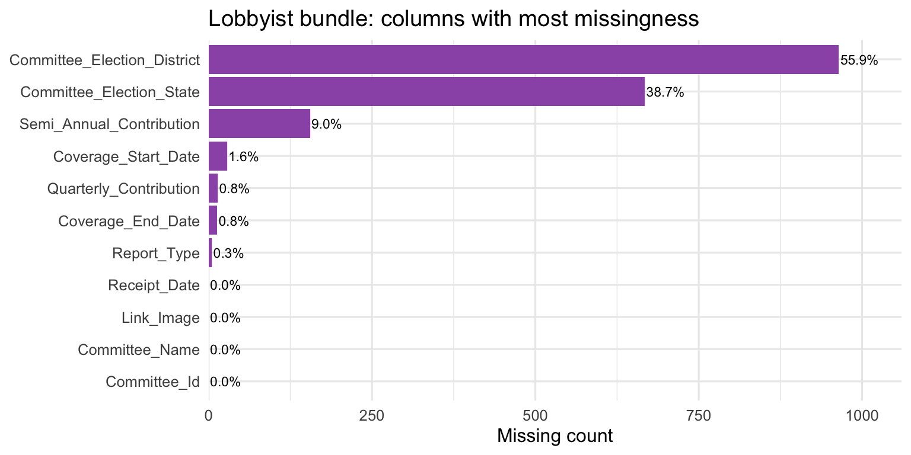
Code
plot_heatmap(lobby, title ="Lobbyist bundle: missing vs present (sampled rows, top columns)")
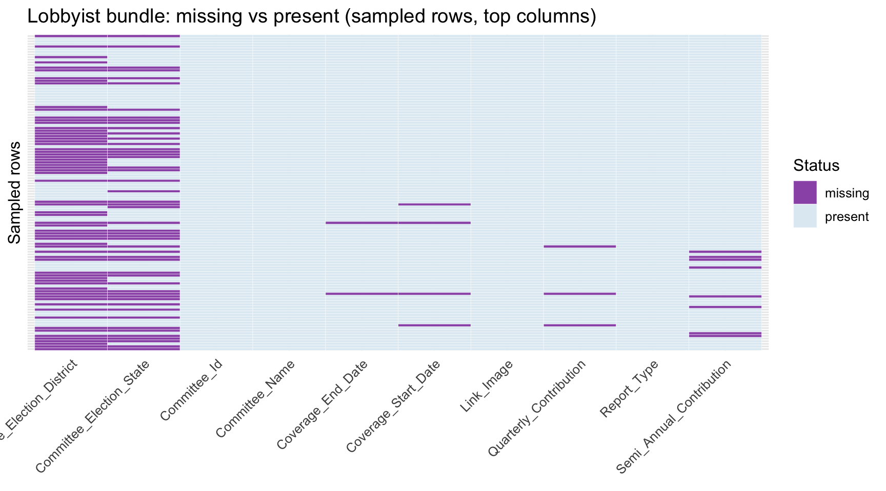
Interpretation: Contributions and dates are clean; coverage dates and election geography are the weak spots. Summaries can trust the amounts, but timelines and maps should call out unknown coverage/geography rather than pruning rows.
plot_missing_cols(disb, title ="Disbursement 2021–2024: columns with most missingness")
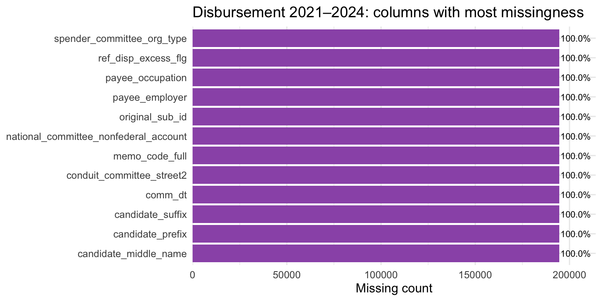
Code
plot_heatmap(disb, n_present =5, title ="Disbursement 2021–2024: missing vs present (sampled rows, top columns)")
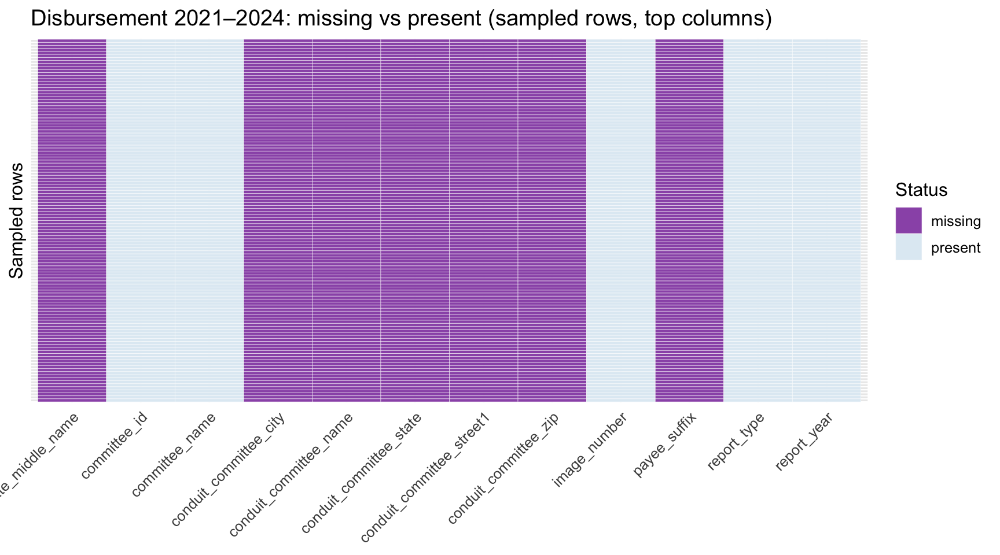
Interpretation: Core IDs, amounts, and dates are present, but many descriptors (employer, occupation, memo flags) are blank. Columns that are completely empty should be dropped; for partially missing descriptors, keep the dollars and mark unknown categories so aggregates stay intact.
Overall, missingness clusters in coverage dates and secondary address fields across datasets. Financial totals and amounts are generally well reported, so analyses relying on monetary values remain robust, while geospatial or temporal coverage analyses should account for these gaps.
2.9 Consolidated XLS files are available for reference in the repo